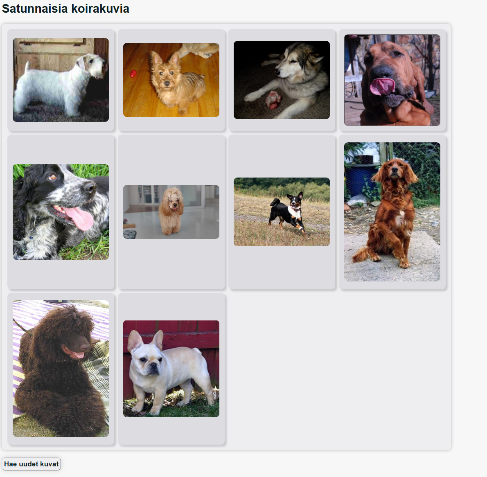
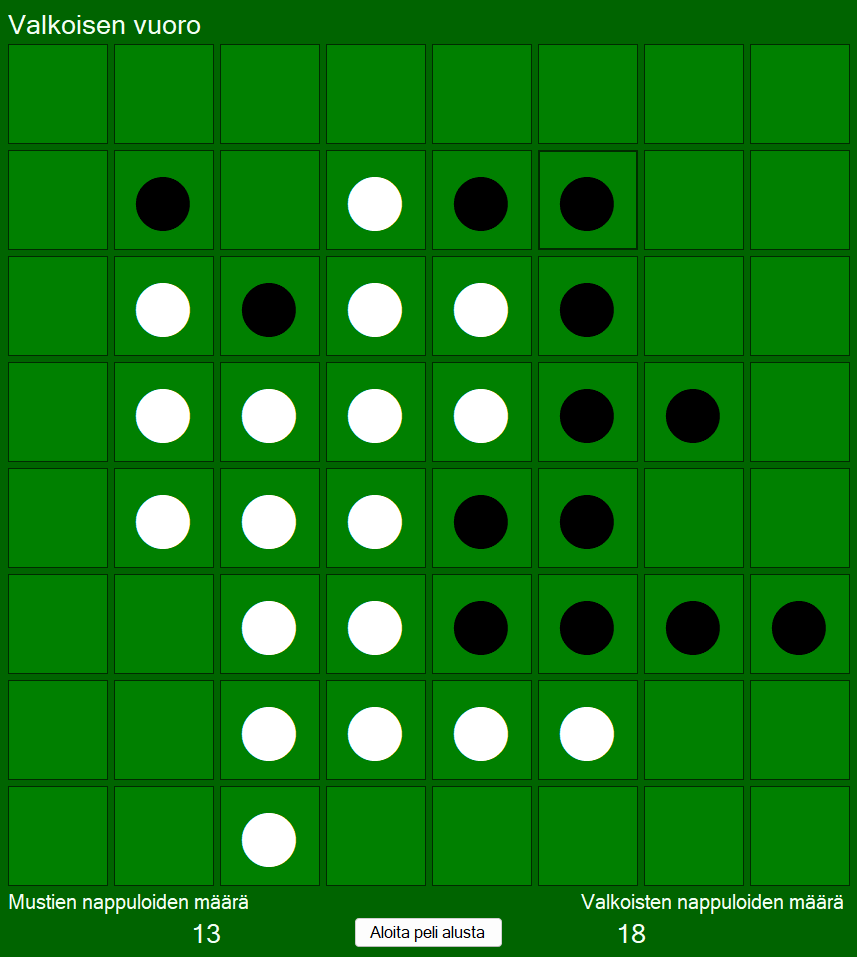

Koulutöitä ja muita projekteja
Olen tehnyt useita verkkosivustoja koulussa. Käyttämämme oppimisympäristön rajoitteiden vuoksi en kuitenkaan pysty suoraan esittelemään niitä suoraan.
Tässä on lyhyt kuvaus muutamasta koulussa tekemästäni sivusta:
- Pizzerian kauppasivuston käyttöliittymä, joka sisältää esim. rekisteröitymis- ja kirjautumissivun, ostoskorin sekä tilaushistorian.
- Elokuvavuokraamo, jossa voi vuokrata elokuvia käyttäjätilille
- Kahvilan kotisivut yhteydenottolomakkeela
Ainoa toimiva työ, josta voin lisätä linkin, on eräs API-harjoitustehtävä, joka hakee satunnaisia koirakuvia julkisesta rajapinnasta.
Verkkosivujen lisäksi olen myös tehnyt Windows forms-ohjelmia, kuten esimerkiksi pizzerian hintalaskurin sekä Othello-lautapelin.

Vapaa-ajalla tekemiäni videopelejä olen julkaissut Itch.io-sivustolle "Turhake"-aliasnimellä.